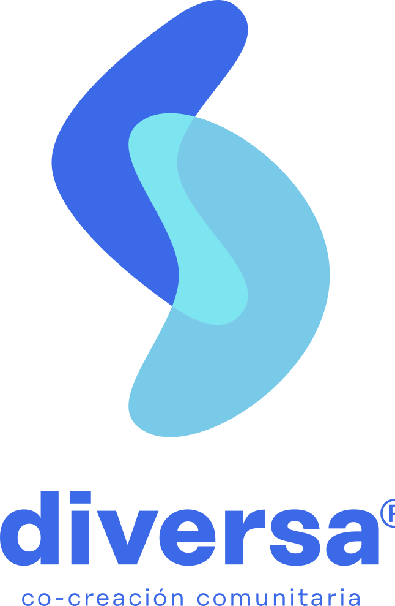
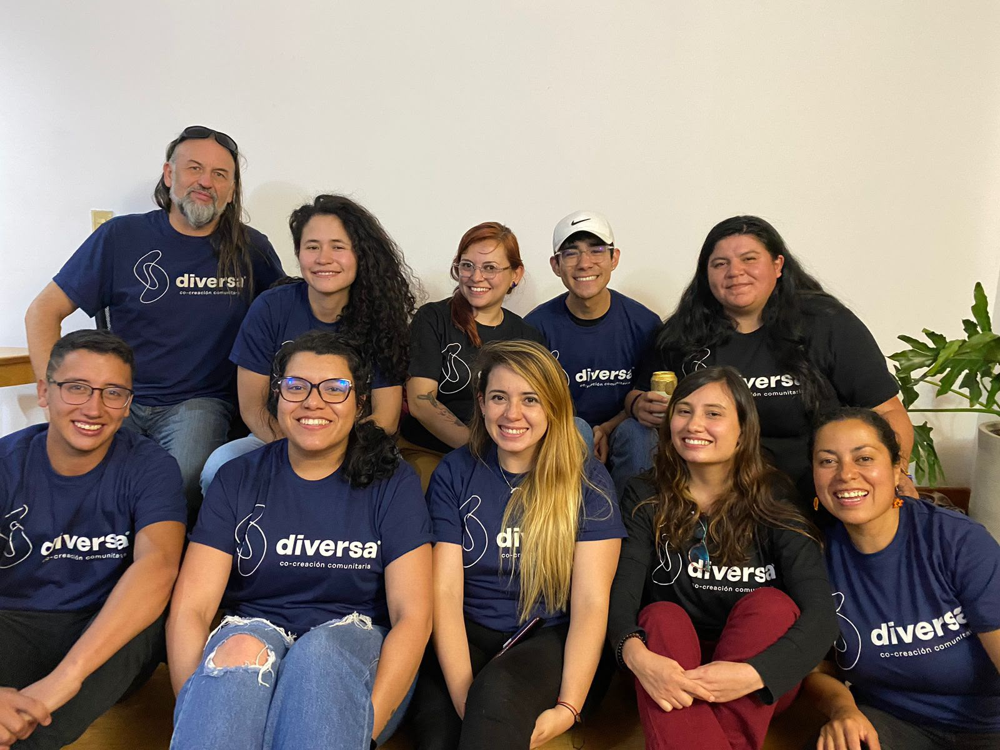
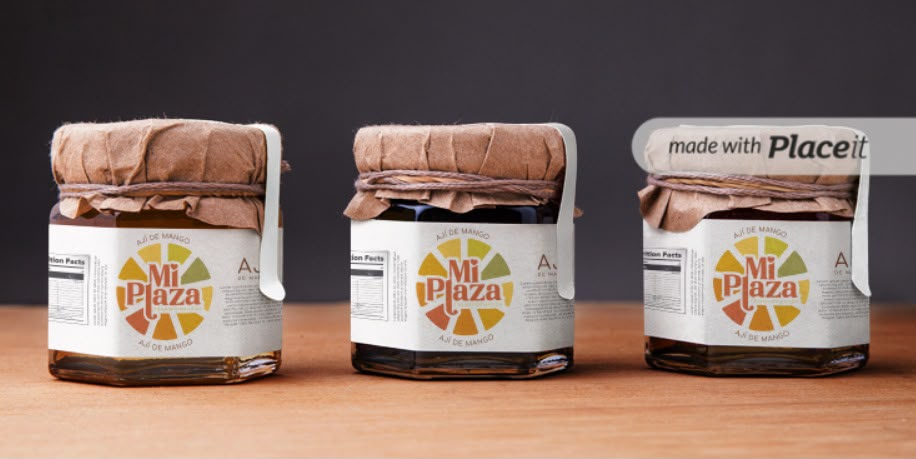
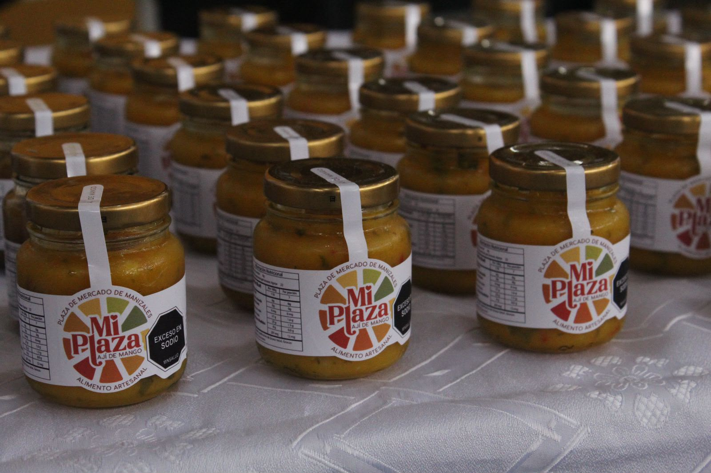
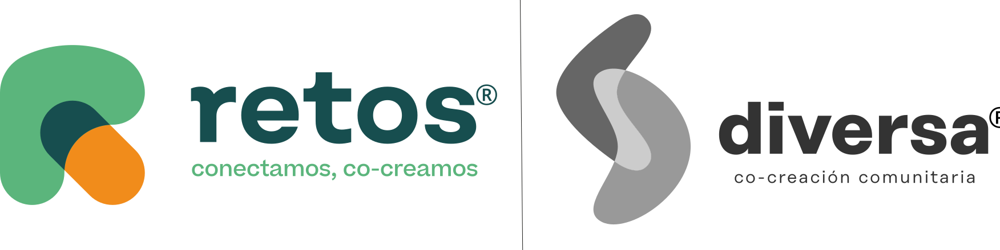

Social Design
Diversa is a non-profit organization with which I have developed social impact projects, adapted working methodologies, and facilitated community co-creation processes.

"Mi Plaza" Project
Designer for a project in Manizales, Colombia . I developed the new brand identity for the city's public market, with the goal of revitalizing the local economy for small food vendors. I also designed the labels for the processed foods made by small local producer associations.

Diversa´s Team 2023

Muck up By Lu Hernández

Final product By Lu Hernández

More projects in www.diversa.co